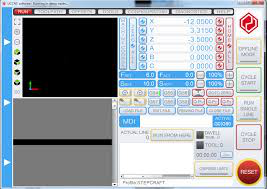

Electronics production
Generating files with mods
In this part, you can get to learn how to generate your .nc file for the stepcraft software.
The website we will be using is mods, you can use the link here to go there: mods.cba.mit.edu
now youre inside the website, first right click and select programes.

Next select open server programes and under gcode, select mil 2d pcb png.


the website will now open up all the flowcharts for adjusments before calculating the .nc file.
At the furtherest left of the flowchart, it is the png image uploader, where you can use png files for your PCB from EAGLES or downloaded from the web, one thing you also have to be sure is that the image dpi must be 1000.

Now change the default settings to according the table below:
Once all settings are set and done, press the calculate button to get the .nc code.

Once the .nc code is downloaded, you can view this file in a software named CAMtronics or a online site called .nc viewer.
these allow you to view the files and show simulations of the process of cutting the boards.
When everything is checked and ok to go, you can save it in a thumbdrive and we can go proceed to use the stepcraft software to cut.
In the stepcraft software, you can use the many different functions in it,
On the black area, it is the bed of the CNC machine, and the little circle there is the spindal of the machine, you can control it with the laptop's keyboard, and use page up and down to bring it up and down.
Now the steps on using the machine.
- Using a spanner, we are going to loosen the chuck for the bit and insert our 0.3 v bit and tighten it.
- To upload files, click on load files and find it.
- Now we need to test if the probe is working, go to dianostics and press on the button on top of the probe, when the probe signal turn from red to green, this shows that the probe is working.
- After testing the probe, we can start to put the copper board onto the cutout of the wood, we first put some double sidede tape on the bottom to hold it on place better, if the copper board is still wobbly inside the cutout, then we can use masking tape on the sides to secure it.
- Now we put the probe in the middle of the copper board and bring the drill above it, and press the button to set the Z-axis, after setting the Z-axis, bring the drill to the bottom left and zero the X and Y axis, this will be the circuit board's side.
- Finally, push down the lever and it will start spinning, to stop it, push on it and it will lift it up, then on the software, click on cycle start and it will start milling the board.
- After the traces are milled, change the drill bit to the 0.8 flat anvil bit and repeat all steps to upload files, set the Z-axis, and start to mill again, now we are milling the outline of the board.
after cutting out the board, we inspect it to see if there are any burrs to clean up, if there is, we can use sandpaper to sand it down.
After the board is cleaned up, we can start soldering.
Types of components:
There are 2 types of components used in electronic circuit boards, through hole technology(THT) and surface mount devices(SMD).
THT components are the most common types of components for PCBs, they are easy to solder and done by inserting the legs of the components through the holes and soldered at the opposite side of the component.
SMD components are another type of component used in PCBs, they are tiny little components that you solder their ends onto the pads on the surfae of the circuit board. One advantage of SMDs are their small size, with a huge range of sizes, you can make the circuit as small as the components and design lets, allowing it to be very compact and pocketable. You can also put lots of them together since they are so tiny. They are also faster to solder as there is a method thsat allows you to be able to solder them in a flash, saving lots of time.
For this elective we will be using the 1206 size.
Soldering techniques
Now we can teach some basic soldering techniques, for THT components it is as shown below, bend the legs, place your soldering iron onto the hole and the leg to heat it up, and then put the solder on it, let the solder completely flow down so as to not prevent any cold joints, and make sure to not put so much to the point of having a large glob.
Now for SMD components, there are 2 common methods, the first is to use a soldering iron, before soldering SMD components. make sure your soldering iron has a fine pointed tip, this will help greatly for your soldering, since the components are so small.
And since we are soldering small parts, it is recommended to get a microscope for soldering these, you do not need to buy expensive microscopes. just a USB powered one will work, and you can use your laptop as your display screen.
First we use a pair of tweezers to hold the component, then we solder one of the ends onto the pads, and once that is done, you can just solder the other side.
Another method we can use is by using the hot air gun, first we put some solder paste onto the pads, then place the components, next we use a hot air gun and heat it up, the heat will melt the paste and solder the component onto the board.

One useful soldering tool is solder flux, solder flux is applied before heating the pads and holes, it is used to clean the oxidized layer for solder to be able to stick better.
If you want a demonstration of soldering these, I have a video I recommend at the bottom that teaches how to solder.
Desoldering
If you wish to remove a component for whatever reason, you will need to know how to desolder, desoldering have multiple methods such as:
- Desoldering pump
- using desoldering braid
- Using a hot air station
- Using gravty to let the component fall out
Here is a video of using some methods of desoldering.